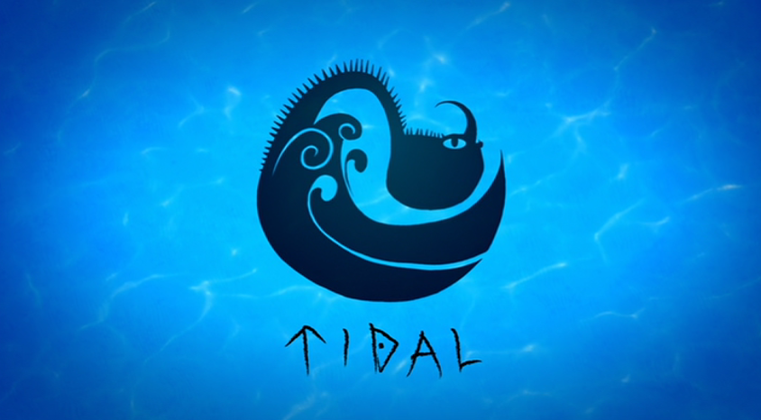

Tidal Class Dragons
Almost all Tidal Class dragons live in ocean, although some of them have amphibian biology allowing them to survive on land. Few of these dragons are cable of creating flames, but many can generate electricity. Dragons of this class are generally larger than those of other classes. Despite this, they are usually very peaceful ocean dwellers who prefer to be left alone and when trained, are exceedingly loyal. According to Hiccup, Tidal Class dragons don't react well to signs of aggression.
The dragon species included are:
Scauldron
(scauldron)
Description:
Patient and organized strategists by nature, Scauldrons are one of the few dragons known to prey on other dragons.
Scauldrons hunt in groups, or pods, and have picked-off smaller species to near-extinction. Although a Scauldron has never been seen to shoot flames, scauldrons scoop up water in their gullets (like pelicans), then boil it internally and shoot the boiling-hot water out again. With its long neck, the Scauldron has a long firing range and can blast an entire ship in a matter of seconds. Being ocean-based, the Scauldron will not typically attack on land. In fact, if a Scauldron is out of water for too long, its body will dry out and eventually perish, unless it is returned to the sea before it's too late.
Despite their dreadful reputation, Scauldrons actually possess a secret, healing ability: their venom is the only known antidote to the rare Dragon Flower, whose pollen can prove harmful - even fatal - to all dragons!
Characteristics:
It is a huge sea dragon that walks on four stubby and powerful legs. They have intense obesity to heat the water they suck in. Its tail is like that of a fish, helping it to swim. When filled with water, the Scauldron's stomach protrudes out and becomes very round. Its neck is very long and thin, and its head is usually fairly slender with its bottom jaw having a sort of pouch that hangs from its chin. When it is out of water for a long time, it begins to dehydrate due to which its skin turns into a shade of grey.
Its bottom jaw is very flexible, and it bulges out when filled with water. The bulging of its jaw is an indication that it is going to shoot boiling water. Its eyes are located near the front of its face, and it has a thin, curving nasal horn. It has very sharp, peg-like teeth that are ideal for catching fish, and it also happens to be venomous. They have only been seen in three colors: turquoise, green, and pale blue, although they change into a parched gray when their body loses moisture.
31.29 meters long & 8.59 meters tall
How to train them:
Training a Scauldron is incredibly difficult and close to impossible due to their aggressive nature. If you want to train a Scauldron, the best way to start is to simply cover yourself in water or anything that smells like fish. Scauldrons are sentimental creatures who love anything that reminds them of their home. Saving their life from certain situations can create a grateful and loyal friendship with a Scauldron, who will also sacrifice its own life to keep you safe. You can train a Scauldron by raising one as a hatchling.
It is also possible to train a Scauldron by giving it Blue Oleander, its favorite food, just like offering other dragons their favorite food.
Thunderdrum
(thunderdrum)
Description:
Instead of breathing fire, the Thunderdrum produces a strong, concussive sound that can kill a human at close range. The blast is so powerful that the dragon is said to "get its power from Thor himself".
When not swelling its body up to yell, Thunderdrums can actually flatten their body by expelling all oxygen from their massive lungs for a limited period of time. In this sleeker state, Thunderdrums can better skim the ocean surface or even dive beneath the waves in search of prey.
While it's true that Thunderdrums create tremendous amounts of noise, they also possess the ability to cancel out each other's sonic blasts. By modulating its roars to the proper frequency, a Thunderdrum can use its soundwaves to negate an attacking Thunderdrum's bellow, rendering it into a rather calming wave of white noise.
Characteristics:
This dragon relies mostly on its two sets of wings, one primary and one smaller set to the rear, using them to get around and move through the water like a tornado.
These dragons have stubby thin legs and long, skinny tails. It also has a series of backward facing spikes lining its back. The Thunderdrum's body resembles several marine creatures, such as a basking shark, whale shark, manta ray, or baleen whale. Thunderdrums have really powerful wings, and the spikes on their tails are very sharp.
39.62 meters long & 6.54 meters tall
How to train them:
Training a Thunderdrum, especially as an adult, is a challenge, partly due to their difficult personality and deafness. Showing protection and gaining the Thunderdrum's trust is an easier way to train it. Adolescents also don't or can't listen except to mature adults. It is easier to train one from birth or have an adult to help. However, adults can be very protective of their young, regardless of their offsprings' ill-behavior
Contact us
Contact no.: 0991-482-1222
Email: elijahlaqui@gmail.com
Facebook: Elijah Kean Laqui